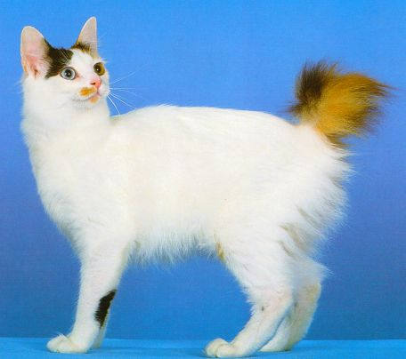

A list of unique species of cats.

Japanese bobtail
The Japanese Bobtail is a breed of domestic cat with an unusual bobtail more closely resembling the tail of a rabbit than that of other cats. The breed was first developed in Japan, and registered officially in the 1960s. The breed has been known in Japan for centuries, and it frequently appears in traditional folklore and art. Japanese Bobtails are believed to be derived from domestic and feral populations of kinked-tailed cats widespread throughout Southeast Asia and southern China.

Sphynx cat
The Sphynx cat, also known as the Canadian Sphynx, is a unique breed recognized for its hairless body, prominent ears, and expressive wrinkles. This breed is known for its affectionate and social nature, making them loyal companions. Sphynx cats are energetic, highly intelligent, and often described as being almost dog-like in their friendliness towards both family and strangers. They were developed through selective breeding starting in the 1960s, stemming from a natural genetic mutation that resulted in hairlessness

Khao Manee cat
The Khao Manee cat also known as the Diamond Eye cat, is a rare, natural breed of domestic cat originating in Thailand, which has an ancient ancestry tracing back hundreds of years. They are mentioned in the Tamra Maew (Cat Book Poems)Khao Manee cats are short-haired solid-white cats.